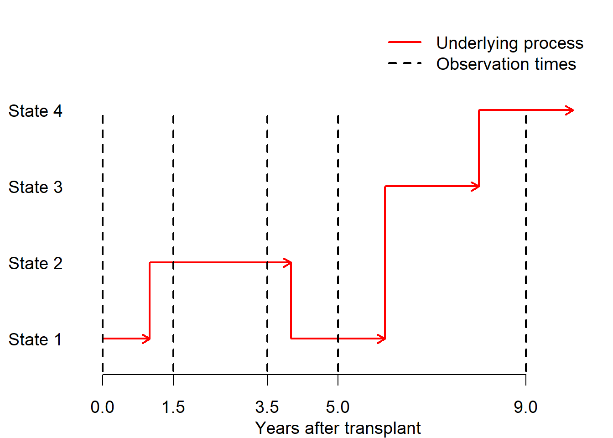

Part 1 Multi-state modelling theory: recap
Multi-state models for intermittently-observed data
More information about the msm package in
A more in-depth treatment of this kind of modelling can be found in
-
- applications in life-course / ageing epidemiology
-
- more advanced mathematically, greater variety of models
1.1 Multi-state processes
Multi-state models represent processes that can be described as discrete states that change through time.
The msm package can be used for any state and transition structure.
Examples in the course represent stages of a disease.
For example, a progressive disease with death from any state (CAV after heart transplantation, from Sharples et al. )

Progression through stages of an irreversible non-fatal condition (psoriatic arthritis, from Gladman and Farewell)

A relapsing-remitting condition with no “final” state (also in psoriatic arthritis, from Jackson et al.)
1.2 msm models work in continuous time
Model represents movement between discrete states in continuous time
1.2.1 Transition intensities
Continuous-time Markov models are defined by transition intensities \(q_{rs}(t)\) between pairs of states \(r,s\).
Transition intensity matrix \(Q\) with diagonals \(q_{rr}(t) = -\sum_{s!=r} q_{rs}(t)\).
1.2.2 Transition probabilities
If \(Q(t) = Q\) is constant over time, we can compute the transition probability matrix over any time unit as \(P(t) = Exp(tQ)\) where Exp is the matrix exponential.
Entries \(p_{rs}(t)\) define the probability someone in state \(r\) now is in state \(s\) at a time \(t\) years from now.
Discrete-time models (not covered in this course) are defined by transition probabilities \(p_{rs}\) over one unit of time. Less common than continuous-time models in medical applications, since data are not generally on a regular discrete-time grid.
Be careful of these distinctions!
1.3 Intermittently-observed data
msm is mainly designed for data that are intermittently observed

1.4 Time-to-event data (not covered in this course)
In multi-state time-to-event data, we know the exact times of transitions between all states, potentially with right-censoring
| Patient | Months | Event |
|---|---|---|
| 1 | 0 | Start of follow up |
| 1 | 50 | Disease diagnosis |
| 1 | 60 | Death |
Competing risks analyses are a special case: e.g. survival data with one “alive” state and multiple “death” states for different causes of death.
msm can be used for this kind of data, but relies on strong assumptions:
- intensites are piecewise constant, i.e. constant over a series of time intervals, or a step function of time.
- models are Markov
Other R packages are better designed for multi-state time-to-event data:
1.5 Examples used for illustration
1.5.1 Psoriatic arthritis

Figure 1.1: Psoriatic arthritis
Factors governing progression of joint damage, an irreversible condition.
Available as psor in the msm package.
1.5.2 Cardiac allograft vasculopathy after heart transplantation

Figure 1.2: CAV after heart transplantation
A condition similar to coronary artery disease that occurs in people who have had heart transplants. Clinically irreversible, but measured state (diagnosed by angiography) can go backwards or forwards
Available as cav in the msm package.